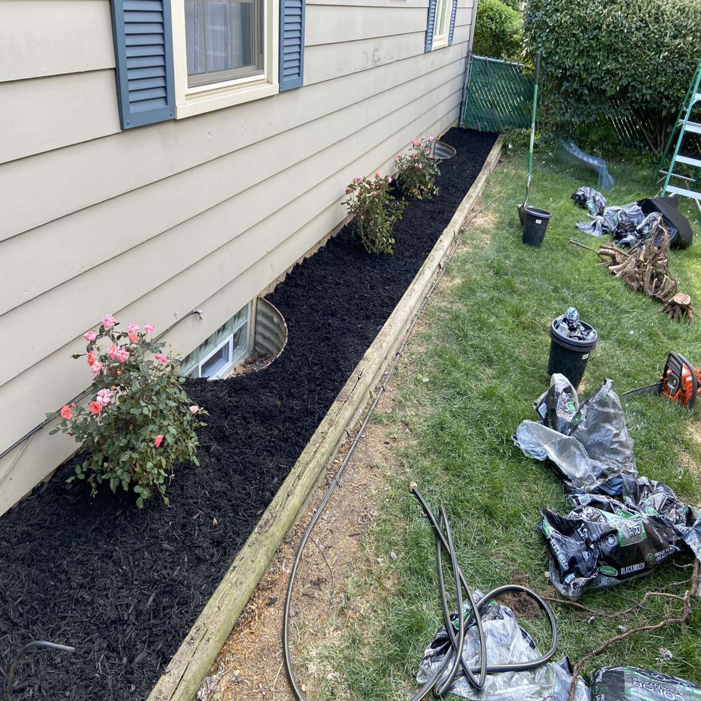
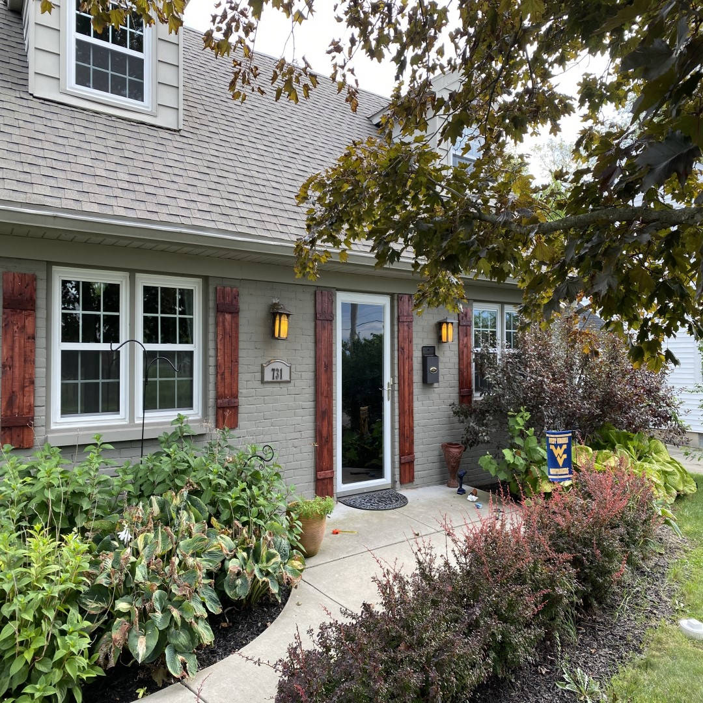
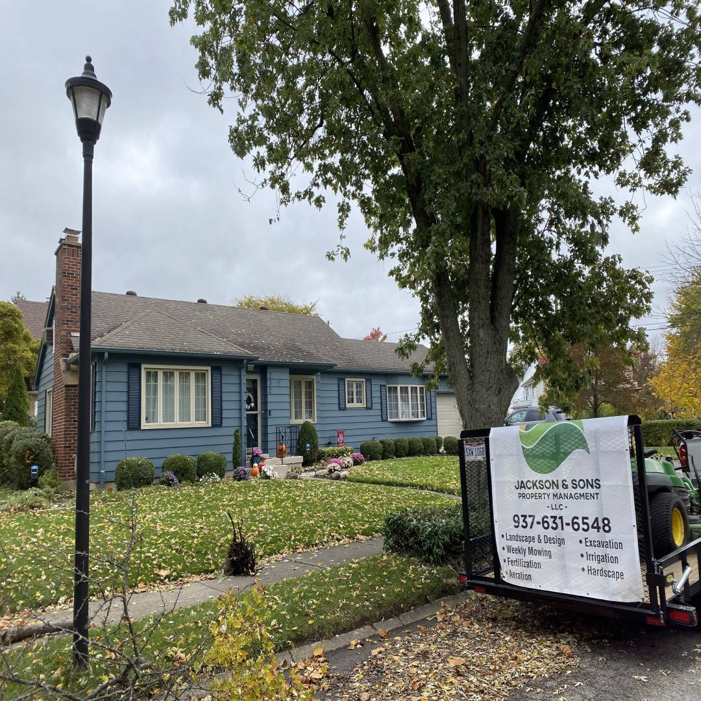

<body>
  <!-- Slideshow container -->
  <div class="slideshow-container">

    <!-- Full-width images with number and caption text -->
    <div class="slides slide-fade">
      <div class="slide-number"></div>
      
    </div>

    <div class="slides slide-fade">
      <div class="slide-number"></div>
      
    </div>

    <div class="slides slide-fade">
      <div class="slide-number"></div>
      
    </div>

    <div class="slides slide-fade">
      <div class="slide-number"></div>
      
    </div>

    <div class="slides slide-fade">
      <div class="slide-number"></div>
      
    </div>

    <div class="slides slide-fade">
      <div class="slide-number"></div>
      
    </div>

    <!-- Next and previous buttons -->
    <a class="prev-slide" onclick="plusSlides(-1)">&#10094;</a>
    <a class="next-slide" onclick="plusSlides(1)">&#10095;</a>
  </div>
  <br>

  <!-- The dots/circles -->
  <div style="text-align:center">
    <span class="slide-dot" onclick="currentSlide(1)"></span>
    <span class="slide-dot" onclick="currentSlide(2)"></span>
    <span class="slide-dot" onclick="currentSlide(3)"></span>
    <span class="slide-dot" onclick="currentSlide(4)"></span>
    <span class="slide-dot" onclick="currentSlide(5)"></span>
    <span class="slide-dot" onclick="currentSlide(6)"></span>
  </div>

  <script src="assets/js/slideshow.js"></script>
</body>